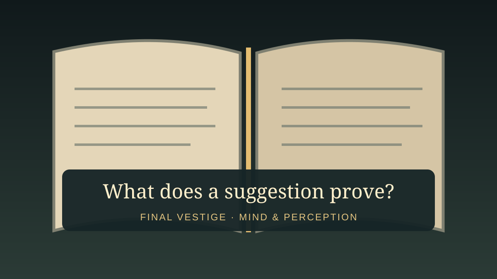

Beginner
First six levels; 24 MP3s. Not the complete course.
Final Vestige Studios · Evidence-first buyer guide · Unpublished
Before paying for a meditation-audio library, separate what is in the download from what the advertising says it can do.
Independent source review November 12, 2026. No purchase, personal use, outcome or refund has been tested by Final Vestige.
Puységur's historical record includes a patient asking an operator to leave her alone, and the operator's authority overriding the request. That is a source-grounded warning about consent, not proof that magnetic somnambulism was effective. Read the case archive. Modern hypnosis theory research also cautions against assuming a single agreed mechanism. Neither source tested Zen12.
Take a page of history. Spend eight minutes looking for names and dates and four minutes looking for details your first instruction made you miss. This is a free self-observation, not a clinical attention test. For structured practice, the existing 52-page Seven Day Focus Fieldbook is free; its optional signup uses the existing Final Vestige Dispatch list. You can read this guide without joining any list.
This is an original static storyboard, not playable or encoded video. It contains no forced playback, audio, tracking or scripts. An accessible future video would have a locally hosted poster, optional player controls, captions and this full transcript.

0–7s: The old file recorded a patient's wish to stop. It also preserved what the operator did.
7–14s: An experience can be sincere without proving the explanation attached to it.
14–21s: Modern suggestion studies test specific people and tasks, not every commercial recording.
21–28s: Zen12 Premium is the full twelve-level collection of forty-eight MP3s.
28–35s: Try twelve quiet minutes with one question. Notice what you overlook.
35–42s: Read the evidence, check the terms, and choose without a miracle promise.
Timed WebVTT caption file: ZEN12-42S.vtt. No-JS transcript always accessible; real player, caption synchronization and mobile checks not yet done.
These are seller-described contents, not supported outcome claims.
First six levels; 24 MP3s. Not the complete course.
All twelve levels; 48 MP3s. Complete seller-described listening collection.
Final six levels; 24 MP3s. Not the same starting point as Beginner.
On November 12 the seller advertised Premium at $87.99 and a one-year money-back guarantee. Neither an actual checkout total nor a processed refund was verified. Check tax/currency, eligibility, delivery and merchant policy before paying; no price is hard-coded into the future merchant control.
A 2024 review found limited evidence for behavioral attention improvements after brief mindfulness audio in its included high-anxiety samples. A separate suggestion/Stroop review examined highly suggestible participants and specific cognitive interference. Neither establishes that this branded product gives an hour of advanced meditation effects in twelve minutes, treats mental health conditions or guarantees lasting focus.
Alternative format choices are different products: Hypnosis Live Total Focus is sold as one 33-minute MP3, while Brainwave Shots Focus Shot offers 15- and 30-minute audio. These are ordinary product-format observations, not proof of either brand's marketed claims.
Do you want a large library? If not, try quiet, the free Fieldbook or a shorter format before considering Premium. Does the seller provide a free trial with no extra relationship? Its separate gift page explicitly says recipients receive the merchant newsletter; that is distinct from Final Vestige's Jetpack program. Were these files tested by us? No; this is a published-source review. Does a guarantee prove results? No; merchant policy must be checked independently at checkout.
Zen12 Premium is the seller's only tier covering all twelve levels and 48 MP3 files. It may suit someone who prefers a multi-level listening structure over a single session. It is not necessary to buy it to access our original research or free practice.
Affiliate disclosure: If you buy through a future approved earning link, Final Vestige may receive a commission at no additional cost to you. There is no live affiliate link in this draft.
Partner approval, an issued tracking link, allowed promotional channels, current merchant checkout and founder release approval are required before any button is activated.
Puységur archive · Franklin commission · Hypnosis theory review · Official Zen12 description · FTC disclosures · FTC evidence standards.